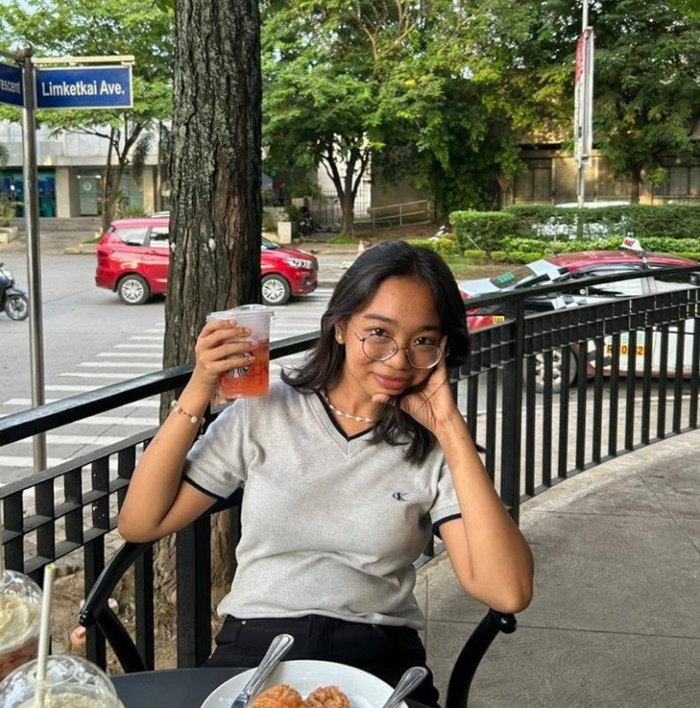

EDUCATION
BS Computer Science
2024 - Present · University of Northern Philippines
Science, Technology, Engineering, and Mathematics
2022 - 2024 · Abra High School
Special Science Class
2018 - 2022 · Abra High School
HELLO, I'M
Just a student who likes coding, figuring things out, and building whatever comes to mind. I'm currently focused on strengthening my programming fundamentals while exploring data science and machine learning.

ABOUT ME
I'm a student who’s still figuring things out, but I genuinely enjoy learning about programming and technology. I like understanding how things work, breaking things apart, and building them back up from scratch.
Right now, I'm focused on strengthening my foundation in programming while slowly exploring things like data science and machine learning. I'm still learning, still making mistakes, and still figuring out what I want to build. For me, the goal is to keep improving, gain real experience, and eventually create things that are actually useful.
RESUME
2024 - Present · University of Northern Philippines
2022 - 2024 · Abra High School
2018 - 2022 · Abra High School
AI Literacy · 2026
Completed an AI Literacy course focused on understanding the fundamentals of artificial intelligence, its practical applications, and responsible use of AI tools.
ACTS - Instruction · 2024
Served as a member of the Instruction Committee, helping organize learning activities, prepare instructional materials, and support the smooth delivery of technology programs.
An application project designed to improve digital accessibility for blind and visually impaired users. As the Frontend Developer, I designed and developed the user interface, implemented accessible and responsive layouts, structured the navigation and interactive elements, and helped create a clear, user-friendly experience focused on accessibility.
View Project →PROJECTS
A collection of projects created while learning and practicing different technologies.
A Julia-based projectile motion simulator that calculates flight time, maximum height, horizontal distance, and trajectory positions from a given launch speed and angle. It includes input validation, formatted result tables, repeated simulations, and CSV export for trajectory data.
A deep learning image classification project that uses transfer learning with MobileNetV2 to identify five types of flowers from images. I worked with the TF Flowers dataset, prepared and evaluated the data, trained the classifier, analyzed its performance, and deployed the model as a TensorFlow Lite application with a Gradio interface for image predictions.
A Java-based attendance monitoring system designed to automate class attendance using QR codes. The system allows instructors to manage students and classes, record and track attendance, automatically determine attendance status based on scheduled class times, and export attendance records as PDF reports. It uses MySQL for data management and Java Swing for the desktop interface.
04 · CONTACT
Have a question, project, or opportunity? Feel free to reach out.
mja.magos@unp.edu.ph